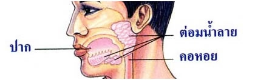

ระบบประสาทคืออะไร?
ระบบย่อยอาหารของคน ระบบย่อยอาหารของสัตว์(มีกระดูกสันหลัง) ระบบย่อยอาหารของสัตว์(ไม่มีกระดูกสันหลัง) แบบทดสอบเรื่องระบบย่อยอาหาร แผนผังไซต์ ระบบย่อยอาหารของคน อาหารที่สิ่งมีชีวิตบริโภคเข้าไป ไม่ว่าจะเป็นชนิดใดก็ตาม จะนำเข้าสู่เซลล์ได้ก็ต่อเมื่ออยู่ในรูปของสารอาหารที่มีโมเลกุลขนาดเล็ก คือ กรดอะมิโน น้ำตาลโมเลกุลเดี่ยว กลีเซอรอล และกรดไขมัน นั่นก็คือ อาหาร โมเลกุลใหญ่ที่สิ่งมีชีวิตรับประทานเข้าไป จำเป็นต้องแปรสภาพให้มีขนาดเล็กลง การแปรสภาพของอาหารดังกล่าวเกิดจากปฏิกิริยาเคมีที่อาศัยการทำงานของเอนไซม์ย่อยอาหาร โดยทั่วไปเรียกว่า น้ำย่อย จากนั้นโมเลกุลของสารอาหารจะถูกดูดซึมเข้าสู่เซลล์ กระบวนการแปรสภาพอาหารที่มีโมเลกุลใหญ่ให้มีโมเลกุลเล็กลง เรียกว่า การย่อยอาหาร (Digestion)
ระบบย่อยอาหารมีหน้าที่ย่อยอาหารให้ละเอียด แล้วดูดซึมผ่านเข้าสู่กระแสเลือดเพื่อไปเลี้ยงส่วนต่าง ๆ ของร่างกาย การย่อยอาหาร (Digestion) หมายถึง กระบวนการสลายอนุภาคอาหารให้มีขนาดเล็กสุด จนสามารถดูดซึมเข้าไปในเซลล์ได้ เมื่อมนุษย์รับประทานอาหารเข้าสู่ร่างกาย จะผ่านระบบต่าง ๆ ดังนี้
- 1.ปาก
- 2.หลอดอาหาร
- 3.กระเพาะอาหาร
- 4.ลำไส้เล็ก
- 5.ลำไส้ใหญ่
- 6.ของเสียออกทางทวารหนัก
ขั้นตอนการย่อยอาหาร
การย่อยอาหารมี 2 ขั้นตอน
1.การย่อยเชิงกล (Mechanical digestion) เป็นกระบวนการทำให้อาหารมีขนาดเล็กลง เพื่อสะดวกต่อการเคลื่อนที่และการเกิดปฏิกิริยาเคมีต่อไป โดยการบดเคี้ยว รวมทั้งการบีบตัวของทางเดินอาหาร ยังไม่สามารถทำให้อาหารมีขนาดเล็กสุด จึงไม่สามารถดูดซึมเข้าเซลล์ได้
2.การย่อยทางเคมี (Chemical digestion) เป็นการย่อยอาหารให้มีขนาดเล็กที่สุด โดยการเกิดปฏิกิริยาเคมีระหว่าง อาหาร กับ น้ำ โดยตรง และจะใช้เอนไซม์หรือน้ำย่อยเข้าเร่งปฏิกิริยา
ผลจากการย่อยทางเคมีเมื่อถึงจุดสุดท้าย จะได้สารโมเลกุลเล็กที่สุดที่สามารถดูดซึมเข้าสู่เซลล์ได้ ซึ่งอาหารที่ต้องมีการย่อย ได้แก่ คาร์โบไฮเดรต โปรตีนและไขมัน ส่วนเกลือแร่ และวิตามินจะดูดซึมเข้าสู่ร่างกายได้โดยตรง
อวัยวะที่ช่วยย่อยอาหาร
1.ต่อมน้ำลาย (Salivary Gland) ผลิตน้ำย่อยอะไมเลส (Amylase) หรือไทยาลิน (Ptyalin) ย่อยแป้งให้เป็นน้ำตาลมอลโทส
2.กระเพาะอาหาร (Stomach) ผลิต น้ำย่อยเพปซิน ย่อยโปรตีนให้เป็นโปรตีนสายสั้น (เพปไทด์) และ น้ำย่อยเรนนิน ย่อยโปรตีนในนมให้เป็นโปรตีนเป็นลิ่ม ๆ
3.ลำไส้เล็ก (Small Intestine) ผลิต น้ำย่อยมอลเทส ย่อยน้ำตาลมอลโทสให้กลายเป็นน้ำตาลกลูโคส น้ำย่อยซูเครส ย่อยน้ำตาลซูโครสให้เป็นน้ำตาลกลูโคสและน้ำตาลฟรักโทส น้ำย่อยแลกเทส ย่อยน้ำตาลแลกโทสให้เป็นน้ำตาลกลูโคสและน้ำตาลกาแลกโตส น้ำย่อยอะมิโนเพปทิเดส ย่อยโปรตีนสายสั้นให้เป็นกรดอะมิโน
4.ตับ (Liver) ผลิตน้ำดี ย่อยไขมันให้เป็นไขมันแตกตัวเป็นเม็ดเล็ก ๆ
5.ตับอ่อน (Pancreas) ผลิตน้ำย่อยลิเพส ย่อยไขมันแตกตัวให้เป็นกรดไขมันและกลีเซอรอล น้ำย่อยทริปซิน ย่อยโปรตีนให้เป็นพอลิเพปไทด์และไดเพปไทด์ น้ำย่อยคาร์บอกซิเพปพิเดส ย่อยเพปไทด์ให้เป็ฯกรดอะมิโน น้ำย่อยอะไมเลส ย่อยเช่นเดียวกับน้ำย่อยอะไมเลสในปาก
-
ต่อมน้ำลาย
ต่อมน้ำลาย (Silvary Gland) เป็นต่อมมีท่อ ทำหน้าที่ผลิตน้ำลาย (Saliva) ต่อมน้ำลายของคนมีอยู่ 3 คู่ คือ
1. ต่อมน้ำลายใต้ลิ้น (Sublingual Gland) 1 คู่
2. ต่อมน้ำลายใต้ขากรรไกรล่าง (Submandibulary Gland) 1 คู่
3. ต่อมน้ำลายข้างกกหู (Parotid Gland) 1 คู่
ต่อมน้ำลายทั้ง 3 คู่นี้ ทำหน้าที่สร้างน้ำลายที่มีเอนไซม์อะไมเลส ซึ่งเป็นเอนไซม์ที่ย่อยสารอาหารจำพวกแป้งเท่านั้น
ความสำคัญของน้ำลาย
1.เป็นตัวหล่อลื่น และทำให้อาหารรวมกันเป็นก้อน เรียกว่า โบลัส (Bolus)
2.ช่วยทำความสะอาดปากและฟัน
3.มีเอนไซม์ช่วยย่อยแป้ง
4.ช่วยทำให้ปุ่มรับรสตอบสนองต่อรสหวาน รสเค็ม รสเปรี้ยว และรสขมได้ดี
การย่อยในปาก
เริ่มต้นจากการเคี้ยวอาหารโดยการทำงานร่วมกันของ ฟัน ลิ้น และแก้ม ซึ่งถือเป็นการย่อยเชิงกล ทำให้อาหารกลายเป็นชิ้นเล็ก ๆ มีพื้นที่ผิวสัมผัสกับเอนไซม์ได้มากขึ้น ในขณะเดียวกันต่อมน้ำลายก็จะหลั่งน้ำลายออกมาช่วยคลุกเคล้าให้อาหารเป็นก้อนลื่นสะดวกต่อการกลืน เอนไซม์ในน้ำลาย คือ ไทยาลิน หรืออะไมเลสจะย่อยแป้งในระยะเวลาสั้น ๆ ในขณะที่อยู่ในช่องปากให้กลายเป็นเดกซ์ทริน (Dextrin) ซึ่งเป็นคาร์โบไฮเดรตที่มีโมเลกุลเล็กกว่าแป้ง แต่ใหญ่กว่าน้ำตาล และถูกย่อยต่อไปจนเป็นน้ำตาลโมเลกุลคู่ คือ มอลโตส

-
กระเพาะอาหาร
ประกอบขึ้นด้วยกล้ามเนื้อเรียบที่อัดกันหนามาก ด้านในมีลักษณะเป็นสันช่วยในการบดอาหารให้มีขนาดเล็กลงอีก ผนังด้านในสามารถสร้างเอนไซม์เพปซิโนเจน (Pepsinogen) และกรดไฮโดรคลอริกหรือกรดเกลือ (HCI) เพปซิโนเจนจะถูกกรดเกลือเปลี่ยนสภาพให้กลายเป็นเอนไซม์เพปซิน (Pepsin) ซึ่งมีความสามารถในการย่อยโปรตีนให้มีโมเลกุลเล็กลง เรียก่า เพปไทด์ (Peptide) แต่ยังไม่สามารถดูดซึมได้

ภาพที่1
ภาพที่2
การย่อยในกระเพาะอาหาร
อาหารจะถูกคลุกเคล้าอยู่ในกระเพาะด้วยการหดตัว และคลายตัวของกล้ามเนื้อที่แข็งแรงของกระเพาะ โปรตีนจะถูกย่อยในกระเพาะ โดยน้ำย่อยเพปซิน ซึ่งย่อยพันธะบางชนิดของเพปไทด์เท่านั้น ดังนั้นโปรตีนที่ถูกเพปซินย่อยส่วนใหญ่จึงเป็นพอลิเพปไทด์ที่สั้นลง ส่วนเรนนินช่วยเปลี่ยนเคซีน (Casein) ซึ่งเป็นโปรตีนในน้ำนมแล้ว รวมกับแคลเซียมทำให้มีลักษณะเป็นลิ่ม ๆ จากนั้นจะถูกเพปซินย่อยต่อไป ในกระเพาะอาหาร น้ำย่อยลิเพสไม่สามารถทำงานได้ เนื่องจากมีสภาพเป็นกรด โดยปกติอาหารจะอยู่ในกระเพาะอาหารนาน 30 นาทีถึง 3 ชั่วโมง ซึ่งขึ้นอยู่กับชนิดของอาหารนั้น ๆ กระเพาะอาหารก็มีการดูดซึมอาหารบางชนิดได้ แต่ปริมาณน้อยมาก เช่น น้ำ แร่ธาตุ น้ำตาลโมเลกุลเดี่ยว กระเพาะอาหารดูดซึมแอลกอฮอล์ได้ดี อาหารโปรตีน เช่น เนื้อวัว ย่อยยากกว่าเนื้อปลา ในการปรุงอาหารเพื่อให้ย่อยง่าย อาจใช้การหมักหรือใส่สารบางอย่างลงไปในเนื้อสัตว์เหล่านั้น เช่น ยางมะละกอ หรือสับปะรด
-
ลำไส้เล็ก
เป็นทางเดินอาหารส่วนที่ยาวมาก แบ่งเป็น 3 ส่วน คือ ดูโอดีนัม เจจูนัม และไอเลียม ที่ผนังลำไส้เล็กสามารถสร้างน้ำย่อยขึ้นมาได้ ซึ่งมีหลายชนิด นอกจากนั้นที่ลำไส้เล็กส่วนดูโอดีนัม ยังได้รับน้ำย่อยจากตับอ่อน และน้ำดีมาจากตับ น้ำย่อยจากตับอ่อนมีหลายชนิดที่สามารถย่อยคาร์โบไฮเดรต โปรตีนและไขมันได้
การย่อยอาหารในลำไส้เล็ก
1.ย่อยน้ำตาลโมเลกุลคู่ ให้เป็นน้ำตาลโมเลกุลเดี่ยว ดังนี้
- มอลโทส โดยเอนไซม์มอลเทส ได้กลูโคส 2 โมเลกุล
- ซูโครส โดยเอนไซม์ซูเครส ได้กลูโคส และฟรักโทส
- แลกโทส โดยเอนไซม์แลกเทส ได้กลูโคส และกาแลกโทส
2. ย่อยสารอาหารโปรตีนต่อจากกระเพาะอาหาร ได้แก่ เพปไทด์โดยเอนไซม์ทริปซินได้กรดอะมิโน ซึ่งเป็น โปรตีนโมเลกุลเดี่ยว
3. ย่อยไขมัน โดยเอนไซม์ ลิเพส จะย่อยไขมันโมเลกุลเล็ก ( emulsified fat ) ให้เป็นไขมันโมเลกุลเดี่ยว ได้แก่ กรดไขมันและกลีเซอรอล
การดูดซึมอาหารในลำไส้เล็ก
การดูดซึมอาหาร หมายถึง ขบวนการที่นำอาหารที่ผ่านการย่อยจนได้เป็นสารโมเลกุลเดี่ยว เช่น กลูโคส กรดอะมิโน กรดไขมัน กลีเซอรอล ผ่านผนังทางเดินอาหารเข้าสู่กระแสเลือดเพื่อไปสู่ส่วนต่าง ๆ ของร่างกาย ลำไส้เล็ก เป็นบริเวณที่ดูดซึมอาหารเกือบทั้งหมดเพราะเป็นบริเวณที่มีการย่อยอาหารเกิดขึ้นอย่างสมบูรณ์ และโครงสร้างภายในลำไส้เล็กก็เหมาะแก่การดูดซึม คือ ผนังลำไส้เล็กจะยาวพับไปมา และมีส่วนยื่นของกลุ่มของเซลล์ที่เรียงตัวเป็นแถวเดียวมีลักษณะคล้ายนิ้วมือ เรียกว่า วิลลัส (Villus) เป็นจำนวนมาก ในแต่ละเซลล์ของวิลลัสยังมีส่วนยื่นของเยื่อหุ้มเซลล์ออกไปอีกมากมาย เรียกว่า ไมโครวิลลัส (Microvillus) ในคน มีวิลลัสประมาณ 20-40 อันต่อพื้นที่ 1 ตารางมิลลิเมตรหรือประมาณ 5 ล้านอัน ตลอดผนังลำไส้ทั้งหมด
การดูดซึมในลำไส้ใหญ่
การดูดซึมอาหารที่ย่อยแล้วส่วนใหญ่เกิดขึ้นที่ผนังลำไส้เล็ก ส่วนอาหารที่ไม่ถูกย่อยหรือย่อยไม่ได้ เช่น เซลลูโลส ก็จะถูกส่งไปยังลำไส้ใหญ่ ส่วนต้นของลำไส้ใหญ่มีไส้เล็ก ๆ ปลายตัน เรียกว่า ไส้ติ่ง ไส้ติ่งของคนไม่ได้ทำหน้าที่อะไรแต่ก็อาจเกิดการอักเสบถึงกับต้องผ่าตัดไส้ติ่งออกไป ซึ่งอาจเกิดจากการอาหารผ่านช่องเปิดลงไป หรือเส้นเลือดที่ไปเลี้ยงไส้ติ่งเกิดการอุดตัน อาหารที่เหลือจากการย่อยและดูดซึมแล้วจะผ่านเข้าสู่ลำไส้ใหญ่ ลำไส้ใหญ่มีแบคทีเรียอยู่จำนวนมาก ซึ่งจะใช้ประโยชน์จากกากอาหารนี้ นอกจากนั้นแบคเทีเรียบางชนิดยังสังเคราะห์ วิตามินบางชนิด เช่น วิตามินเค วิตามินบี 12 เซลล์ที่บุผนังลำไส้ใหญ่ สามารถดูดน้ำ แร่ธาตุ วิตามิน และกลูโคสจากกากอาหารเข้ากระแสเลือด ซึ่งส่วนใหญ่จะเป็นน้ำ จึงทำให้กากอาหารข้นขึ้น จนเป็นก้อนกากอาหารจะผ่านไปถึงไส้ตรง ท้ายสุดของไส้ตรงเป็นกล้ามเนื้อหูรูดแข็งแรงมาก มีลักษณะเป็นวงรอบปากทวารหนักทำหน้าที่บีบตัวในการขับถ่าย และผนังภายในลำไส้ใหญ่จะขับเมือกออกมาหล่อลื่นก้อนอาหาร
น้ำดี (Bile) สร้างจากตับ (Liver) แล้วถูกนำไปเก็บไว้ที่ ถุงน้ำดี (Gall Bladder) ไม่ถือว่าเป็นเอนไซม์ เพราะจะเปลี่ยนสภาพไปจากเดิม เมื่อปฏิกิริยาสิ้นสุดลงแล้ว (น้ำดีไม่มีน้ำย่อย) มีส่วนประกอบ 3 ส่วน คือ
1.เกลือน้ำดี (Bile Salt) มีหน้าที่ตีให้ไขมัน (Fat) แตกตัวเป็นหยดเล็ก ๆ ไขมันที่ถูกตีให้แตกตัวเป็นหยดเล็ก ๆ เรียกว่า อีมัลชั่น (Emulsion) จากนั้นถูก Lipase ย่อยต่อให้เป็นกรดไขมันและกลีเซอรอล
2.รงควัตถุน้ำดี (Bile Pigment) เกิดจากการสลายตัวของฮีโมโกลบิน (Hemoglobin) โดยตับเป็นแหล่งทำลายและกำจัด Hemoglobin ออกจากเซลล์ เม็ดเลือดแดงที่หมดอายุ โดยเก็บรวบรวมเข้าไว้เป็นรงควัตถุในน้ำดี (Bile Pigment) คือ บิริรูบิน (Bilirubin) จึงทำให้น้ำดีมีสีเหลืองหรือเขียวอ่อน และจะถูกเปลี่ยนเป็นสีเหลืองแกมน้ำตาลโดยแบคทีเรียในลำไส้ใหญ่เกิดเป็นใสในอุจจาระ
3.โคเรสเตอรอล (Cholesterol) ถ้ามีมาก ๆ จะทำให้เกิดนิ่วในถุงน้ำดี เกิดการอุดตันที่ท่อน้ำดี เกิดโรคดีซ่าน (Janudice) มีผลทำให้การย่อยอาหารประเภทไขมันบกพร่อง